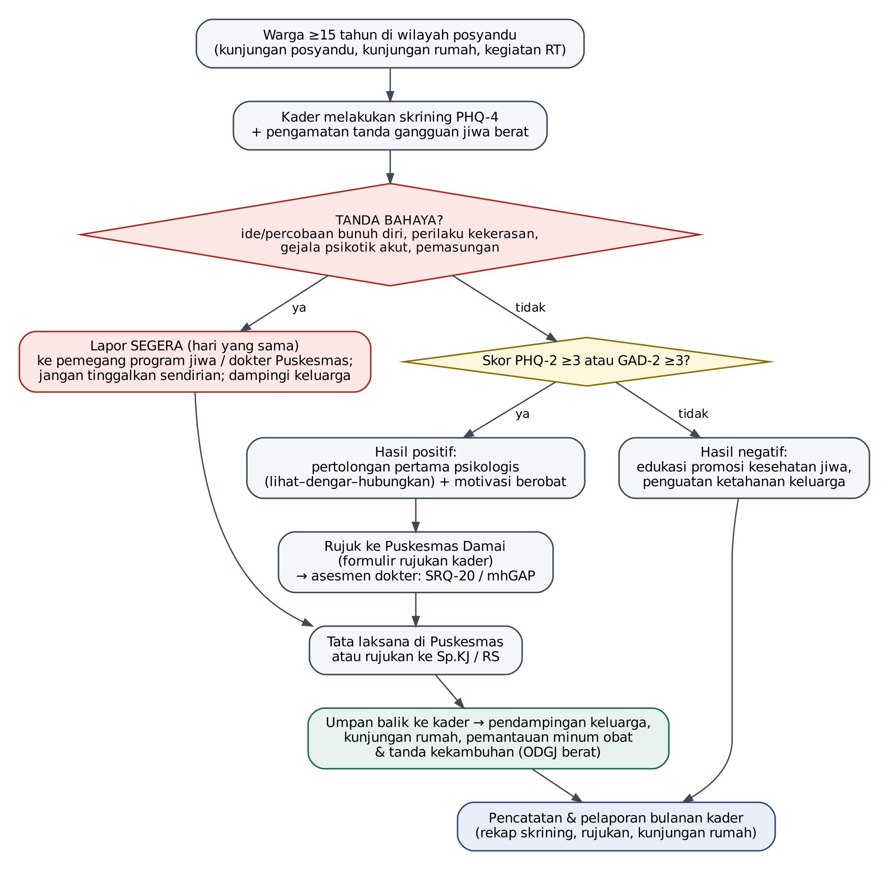

Ringkasan materi Pelatihan Kader Sehat Jiwa: Kenali, Dampingi, Rujuk. Gunakan sebagai pegangan saat posyandu dan kunjungan rumah.
1. Pengenalan dasar kesehatan jiwa
Sehat jiwa berarti seseorang mampu menghadapi tekanan hidup, menyadari kemampuannya, bekerja atau belajar dengan baik, dan berperan di lingkungannya. Kondisi jiwa bergerak dari sehat → masalah psikososial (stres karena kehilangan pekerjaan, konflik, sakit kronis) → gangguan jiwa yang mengganggu fungsi sehari-hari.
Mitos yang perlu diluruskan
- Gangguan jiwa bukan karena kurang iman, guna-guna, atau kelemahan pribadi.
- Gangguan jiwa dapat diobati, dan penderitanya dapat kembali beraktivitas.
- Obat jiwa tidak boleh dihentikan sendiri walaupun pasien sudah tenang.
2. Ketahanan jiwa keluarga
- Keyakinan bersama: memaknai kesulitan sebagai tantangan yang dihadapi bersama, menjaga harapan dan nilai spiritual.
- Kebersamaan dan pembagian peran: saling membantu, tidak membebankan perawatan pada satu orang saja.
- Komunikasi terbuka: memberi ruang anggota keluarga bercerita tanpa dihakimi; menyelesaikan masalah bersama.
- Keluarga biasanya yang pertama melihat perubahan perilaku. Ajak bicara anggota keluarga yang tampak berubah.
3. Deteksi dini gangguan jiwa
| Kondisi | Tanda yang perlu dikenali |
|---|---|
| Stres | Sulit tidur, sakit kepala atau keluhan lambung berulang, mudah marah, sulit konsentrasi |
| Depresi | Sedih/murung dan kehilangan minat hampir setiap hari ≥2 minggu, lelah, nafsu makan berubah, merasa tidak berguna |
| Cemas | Khawatir berlebihan sulit dikendalikan, gelisah, tegang, jantung berdebar, sulit tidur |
| Gangguan jiwa berat | Mendengar atau melihat yang tidak ada, keyakinan aneh, bicara kacau, curiga berlebihan, menarik diri, tidak merawat diri |
Skrining oleh kader
Gunakan Skrining Kader Sehat Jiwa (PHQ-4). PHQ-2 ≥3 atau GAD-2 ≥3 berarti positif: berikan pertolongan pertama psikologis dan rujuk ke Puskesmas.
Tanda bahaya: lapor hari ini
- Ungkapan ingin mati, rencana, atau percobaan bunuh diri
- Perilaku kekerasan atau membahayakan diri/orang lain
- Gejala psikotik akut
- Dipasung, dikurung, atau ditelantarkan
4. Pertolongan pertama psikologis dan konseling sederhana
- Lihat: pastikan keamanan; kenali kebutuhan mendesak (makan, obat, tempat aman).
- Dengar: dekati dengan tenang, perkenalkan diri, dengarkan tanpa memaksa bercerita dan tanpa menghakimi. Tunjukkan empati: “Kedengarannya Ibu sedang sangat berat.”
- Hubungkan: bantu ke dukungan keluarga dan layanan Puskesmas; serahkan surat rujukan.
Yang perlu dihindari
- Memberi nasihat sebelum mendengarkan, menyalahkan, atau menyepelekan (“begitu saja kok sedih”).
- Menjanjikan hal yang tidak bisa ditepati, atau menceritakan masalah warga kepada orang lain.
5. ODGJ berat, manajemen kasus, dan rujukan
- Kunjungi rumah ODGJ berat secara berkala; tanyakan kepatuhan minum obat dan jadwal kontrol.
- Kenali tanda awal kambuh: sulit tidur, mudah curiga, menarik diri, bicara kacau, putus obat.
- Cegah pemasungan; dorong keluarga membawa pasien ke Puskesmas.
- Libatkan keluarga: psikoedukasi keluarga terbukti mengurangi kekambuhan.
Alur deteksi dini dan rujukan

6. Pencegahan dan promosi kesehatan jiwa
- Sisipkan pesan kesehatan jiwa dalam penyuluhan posyandu: tidur cukup, aktivitas fisik, bercerita kepada orang terdekat, kurangi rokok dan alkohol.
- Ajak warga tidak mengucilkan ODGJ dan keluarganya.
- Kenalkan layanan kesehatan jiwa di Puskesmas Damai dan layanan konseling Healing119.id.
- Catat dan laporkan kegiatan setiap bulan kepada pengelola program jiwa Puskesmas.
Bila ada risiko bunuh diri
Jangan tinggalkan orang tersebut sendirian, jauhkan benda berbahaya, dan segera hubungi dokter UPTD Puskesmas Damai atau IGD rumah sakit terdekat. Layanan konseling Kemenkes Healing119.id dapat dihubungi melalui telepon 119 ekstensi 8 atau situs healing119.id (24 jam, gratis).